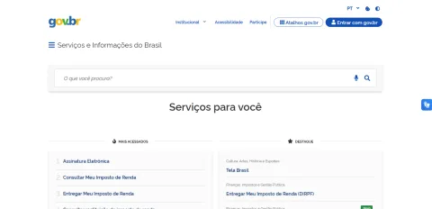
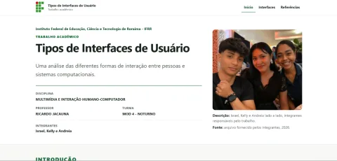

01
GOV.BR
Portal oficial de serviços e informações do Governo Federal.
Visitar site GOV.BR (abre em nova aba)Preferências de leitura
Ajuste a apresentação conforme sua necessidade. As escolhas ficam salvas neste navegador.
Padrão — 100%
Farol da Acessibilidade
Farol da Acessibilidade
Esta conta não possui permissão administrativa.
Instituto Federal de Educação, Ciência e Tecnologia de Roraima - IFRR
Atividade acadêmica
Uma análise comparativa utilizando o Lighthouse.
Israel Andreia Kelly
O ponto de partida
As capturas abaixo foram extraídas dos próprios relatórios usados nesta atividade. Observe antes de conhecer as notas.

01
Portal oficial de serviços e informações do Governo Federal.
Visitar site GOV.BR (abre em nova aba)
03
Site desenvolvido pela equipe na Atividade 05.
Visitar site da equipe (abre em nova aba)Mas qual deles você acredita que possui a melhor acessibilidade?
Dinâmica ao vivo
Observe os três sites e tente descobrir qual obteve a melhor e a pior pontuação de acessibilidade no Lighthouse.
0 votos
A opinião da sala
Os gráficos usam somente os votos reais desta sessão e não exibem nomes.
Será que a turma acertou?
Sem spoilers
Aguardando a revelação do apresentador…
A resposta oficial
Primeiro, apenas a categoria central desta atividade.
No recorte analisado
Portal público
Comércio eletrônico
O resultado surpreendeu você?
Visão completa
A coluna de acessibilidade está destacada porque ela é o foco da análise.
| Site | Desempenho | Acessibilidade | Práticas recomendadas | SEO |
|---|---|---|---|---|
| Site da equipe | — | — | — | — |
| GOV.BR | — | — | — | — |
| Mercado Livre | —* | — | — | — |
* Atenção: o Lighthouse registrou interferência de extensões do navegador durante a medição de desempenho do Mercado Livre. Por isso, o foco comparativo permanece na acessibilidade.
GOV.BR e Mercado Livre reúnem muito mais conteúdo, integrações e componentes. A conclusão correta é: na página e no recorte analisados, o site da equipe obteve a maior pontuação automatizada de acessibilidade.
Depois do palpite
Uma ferramenta automatizada do Google utilizada para avaliar a qualidade de páginas web.
Velocidade e carregamento.
Uso por diferentes pessoas e tecnologias assistivas.
Boas práticas técnicas e de segurança.
Boas práticas para mecanismos de busca.
Inadequações encontradas
Exemplos reais registrados nos relatórios, traduzidos para impactos cotidianos.
GOV.BR
ProblemaBotão da região de login sem texto compreensível por leitor de tela.
ImpactoPode ser anunciado apenas como “botão”, sem explicar sua função.
SoluçãoFornecer texto acessível coerente por conteúdo, aria-label ou
aria-labelledby.
Problema“Atalhos gov.br” tinha nome acessível “Abrir menu de seleção serviços”.
ImpactoConfunde leitores de tela e comandos por voz.
SoluçãoIncluir claramente o texto visível no nome acessível.
ImpactoDificulta o toque e o uso por pessoas com limitações motoras.
SoluçãoAumentar área clicável e espaçamento dos indicadores.
Mercado Livre
ImpactoDificulta a leitura para pessoas com baixa visão.
SoluçãoUsar combinação com pelo menos 4,5:1 neste contexto.
ProblemaContraste de 1,57:1 entre “Entrar” e o texto ao redor.
SoluçãoAdicionar sublinhado, peso ou outra indicação consistente.
Problema51 ocorrências de alvos com tamanho ou espaçamento insuficiente.
ImpactoMais erros de toque em celulares.
SoluçãoAumentar área de toque, padding e distância entre elementos.
Site da equipe
O site passou em todas as verificações automáticas que entraram no cálculo, mas o relatório ainda registrou uma inconsistência de peso zero.
A auditoria label-content-name-mismatch detectou a diferença. Como tinha peso zero naquele
relatório, a pontuação permaneceu 100.
Caminhos práticos
Todo botão e link deve comunicar claramente o que faz.
Validar cores e não depender apenas delas para transmitir ação.
Criar áreas confortáveis, separadas e fáceis de alcançar.
Verificar foco, ordem de navegação e acionamento dos controles.
Usar automação, revisão manual e, quando possível, testes com usuários.
Síntese
Mesmo sites profissionais e amplamente utilizados podem apresentar inadequações. O Lighthouse identifica muitos problemas, mas a avaliação humana continua necessária.
Acessibilidade não é apenas aparência.
Pequenos detalhes podem impedir alguém de utilizar uma interface.
Uma nota automática não substitui a experiência real do usuário.
Evidências da atividade
Os documentos abaixo são os relatórios HTML originais, preservados sem alterações.
Relatório Lighthouse completo.
Abrir relatório do GOV.BR (abre em nova aba)Relatório Lighthouse completo.
Abrir relatório do Mercado Livre (abre em nova aba)Relatório Lighthouse completo.
Abrir relatório do site da equipe (abre em nova aba)